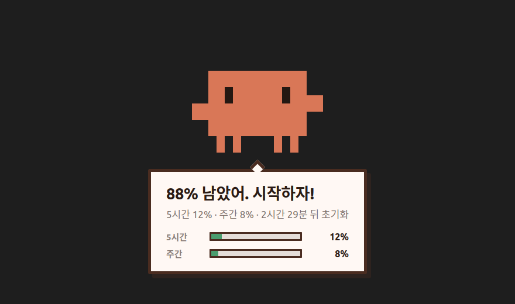
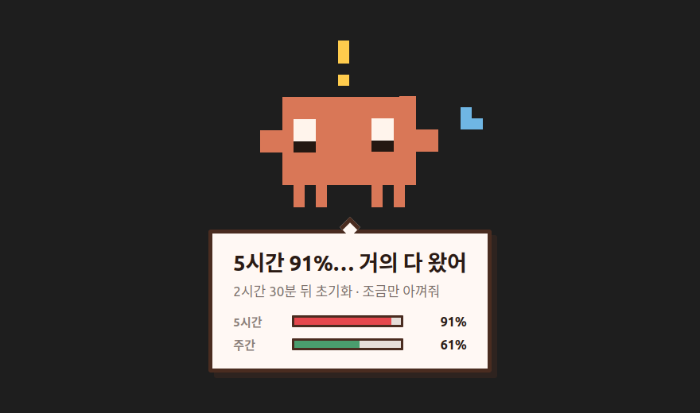
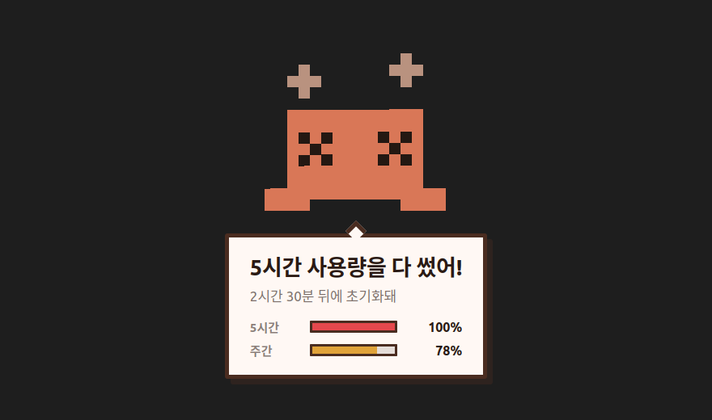

묻기 전에 먼저 알려줍니다.
Claude 사용량이 50·70·90·100%에 닿는 순간 픽셀 클로드 캐릭터가 화면에 나타납니다. 리눅스 트레이 앱, 공식 usage API, 받을 파일은 하나.

전부 모양이 같습니다. 열어야 보이는 막대 그래프이거나, 마우스를 갖다 대야 보이는 숫자입니다. 그래서 확인해야겠다고 생각한 순간에만 사용량을 알게 됩니다 — 정작 중요한 순간은 리팩터링 한복판에서 세션을 잃기 직전, 아무것도 보고 있지 않을 때입니다.
이 앱은 그것을 뒤집습니다. 트레이에 상주하며 usage API를 읽다가, 임계값을 넘는 순간 캐릭터가 사용자를 찾아옵니다. 사용자는 아무것도 하지 않습니다.
5시간·주간 한도의 50 / 70 / 90 / 100%에서 나타납니다. 임계값은 바꿀 수 있습니다.
자리를 비웠거나 화면이 잠겨 있으면 말을 붙들고 기다립니다. 못 본 알림은 없는 알림이니까요.
Wayland에서는 앱이 어느 화면을 보고 있는지 물어볼 수 없습니다. 그래서 맞히지 않고 전부에 띄웁니다. 맞힐 필요가 없으면 틀릴 일도 없습니다.
Claude Code SessionStart 훅(선택): 시작하기 전에 남은 양을 알려줍니다.
투명한 클릭 통과 오버레이. 작업표시줄에 뜨지 않고, 포커스를 훔치지 않으며, 3초 뒤 사라집니다.
트레이 아이콘은 캐릭터에서 직접 생성되며, 사용량 구간에 따라 표정이 바뀝니다.
확장을 함께 쓰면 Claude Code 패널 옆 사이드바에 같은 캐릭터가 뜹니다. 둘 중 하나만 말합니다.


파일 하나. 설치 프로그램도, root도, 패키지 매니저도 필요 없습니다.
chmod +x claude-usage-tracker-*-x86_64.AppImage
./claude-usage-tracker-*-x86_64.AppImage
창은 뜨지 않습니다 — 정상입니다. 트레이 아이콘을 찾으세요. 창이 없는 것이
이 앱의 정상 상태입니다. 지울 때는 파일과
~/.config/claude-usage-tracker/ 를 지우면 됩니다.
선택입니다. 편집기 안에서도, Claude Code 패널 옆에서 같은 알림을 받습니다:
code --install-extension hosungjoo.claude-usage-tracker-vscode마켓플레이스: Claude Usage Tracker for Claude Code. 확장만 써도 동작하고, 트레이 앱과 함께 켜 두면 패널이 보이는 동안에는 패널이, 아니면 오버레이가 알립니다.
Claude Code가 스스로 쓰는 것과 같은 엔드포인트를 호출합니다:
GET https://api.anthropic.com/api/oauth/usage
Authorization: Bearer <token from ~/.claude/.credentials.json>
anthropic-beta: oauth-2025-04-20응답에는 5시간 창, 7일 창, 모델별 한도의 실제 사용률이 퍼센트로 들어 있습니다 — 직접 환산해야 하는 토큰 수가 아닙니다.
토큰은 기기 밖으로 나가지 않고 로그에도 남지 않습니다. 로거는 자격증명처럼 보이는 조각을 일부러 넉넉하게 지웁니다. 로그는 도움을 청하며 낯선 사람에게 보내는 파일이기 때문입니다.
| 이 앱 | 막대 그래프 대시보드 | CLI /status | |
|---|---|---|---|
| 묻지 않아도 알려준다 | 예 | 아니오 | 아니오 |
| 다른 앱을 쓰는 중에도 동작 | 예 | 아니오 | 아니오 |
| 자리에 올 때까지 기다린다 | 예 | — | — |
| 멀티모니터 | 전 화면 | — | — |
| 공식 usage API (실제 %) | 예 | 제각각 | 예 |
이 앱을 설치하면 됩니다. 트레이에 상주하며 공식 usage API를 읽다가, 5시간·주간 한도의 50·70·90·100%를 넘는 순간 캐릭터가 화면에 나타납니다. 무언가를 열 필요가 없습니다.
필요 없습니다. Claude Code가 이미 저장해 둔 OAuth 토큰
(~/.claude/.credentials.json)을 그대로 씁니다. Claude Code에
로그인되어 있다면 설정할 것이 없습니다.
들지 않습니다. usage 엔드포인트는 모델 추론이 아니라 계정 메타데이터를 돌려주므로 할당량을 쓰지 않습니다.
Claude 구독은 5시간 세션 창과 7일 창으로 사용량을 셉니다. usage API는 각 창의 사용률을 퍼센트로, 모델별 한도와 초기화 시각까지 알려줍니다.
아직 아닙니다. 오버레이·자동 시작·재실 감지가 Linux/XDG와 GNOME 인터페이스를 전제로 쓰여 있습니다. 코어는 이식 가능하지만 껍데기는 그렇지 않습니다.
포커스를 가져가지 않는 클릭 통과 오버레이이고 3초 뒤 사라집니다. 자리를 비웠다면 빈 의자에 대고 말하는 대신 기다립니다.
데스크톱 알림은 사람이 스스로 무시하도록 훈련된 대상입니다. "지금 작업 세션을 잃기 직전입니다"를 전하기에 정확히 잘못된 매체입니다.